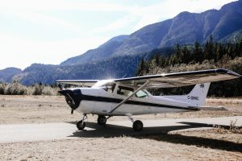
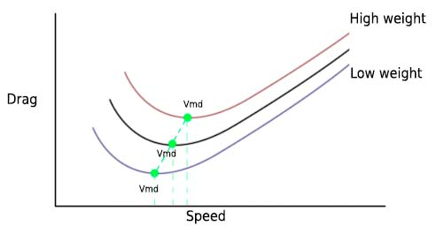

1. Introduction to aircraft performance
DEFINITIONS
· Expressions of aircraft ceiling
| Absolute ceiling | The altitude at which the rate of climb of an aircraft becomes zero feet per minute |
| Service ceiling | The altitude at which the rate of climb is reduced to a given value, generally between 100 - 500 fpm |
· Other definitions
| Stopway | A defined rectangular area on the ground at the end of a runway in the direction of takeoff designated and prepared by the competent authority as a suitable area in which an aircraft can be stopped in the case of an interrupted takeoff |
| Clearway | Area beyond the runway, centrally located about the extended centreline of the runway and under the control of airport authorities, above which no object or terrain protrudes |
| Screen | An imaginary barrier located at the end of the TODA or at the beginning of the LDA, used to asses the performance of the airplane |
| Take-off Run Available (TORA) | The length of runway declared available and suitable for the ground run of an aeroplane taking off |
| Take-off Distance Available (TODA) | The length of the take off run available plus the length of the clearway, where provided |
| Accelerate-Stop Distance Available (ASDA) | The length of the take off run available plus the length of the stopway, where provided |
| Landing Distance Available (LDA) | The length of the runway which is declared available by the appropriate Authority and is suitable for the ground run of an aeroplane landing |
| Balanced field | A field is said to be balanced if TODA = ASDA |
| Climb gradient | The ratio between distance traveled over the ground and altitude gained, and is expressed as a percentage |
| Specific fuel consumption (SFC) | The quantity of fuel consumed (by weight) to produce one unit of power in one unit of time |
| Certification Specification (CS) | Standard that defined the expected performance according to the type of aircraft |
PERFORMANCE CLASSES
· Performance classes
- Class A
- All multi-engine turbojets
- Turboprops with more than 9 passengers or more than 5700 kg MTOW
- Must meet CS-25
- Class B
- Turboprops or piston engine aircraft with less than 9 passengers and less than 5700 kg MTOW
- Must meet CS-23
- Class C
- Piston engine aircraft with more than 9 passengers and more than 5700 kg
|  | ||
| Class A | Class B | Class C |
| Commercial jets | General aviation aircraft | Big old piston engine aircraft |
EXPRESSIONS OF AIRCRAFT PERFORMANCE
· Expressions of aircraft performance
| Measured performance | Average performance of a prototype aircraft flown by test pilots |
| Gross performance | Average performance that a fleet flown by pilots should achieved if maintained and operated according to the airplane manuals Gross performance is less than measured performance |
| Gross height | Height at which an airplane is expected to be of using gross climb performance |
| Net performance | The gross performance degraded by an established safety factor, to allow for contingencies and variations in piloting technique |
| Net height | Height at which an airplane is expected to be of using net climb performance |
THE SCREEN HEIGHT
· Screen height
- The height above the ground of an imaginary screen that the aircraft would just clear when taking off or landing.
- This height must be achieved over the runway (or clearway, if available)
- Screen height is:
- Class A (Dry): 35 ft
- Class A (Wet): 15 ft
- Class B (All conditions): 50 ft
2. Aerodromes
CLEARWAYS AND STOPWAYS
· Clearway
- It's the area immediately beyond the runway, under the control of airport authorities, over which an aircraft may climb safely up to screen height.
- Clearways must conform to some requirements:
- Maximum upward slope is 1'25%
- Minimum extension 75m each side of the centre line.
- Maximum length is 50% of TORA
· Stopway
- Area beyond the take-off runway, which can support an aircraft during an RTO
- The stopway must be at least as wide as the runway
AVAILABLE TAKE-OFF AND LANDING DISTANCE DEFINITIONS
· Take-off Run Available (TORA)
- Runway distance available for the ground run of an aircraft taking off.
· Take-off Distance Available (TODA)
- Take-off run available plus the clearway, if it exists.
· Accelerate-Stop Distance Available (ASDA)
- Length of the take-off run available plus the stopway, if it exists.
· Landing Distance Available (LDA)
- The runway length that is declared available and suitable for satisfying aircraft landing distance requirements.
- Displaced thresholds are generally not available for landing purposes.
BALANCED FIELD
· A field is said to be balanced when TODA = ASDA
- A Balanced Field is advantageous since it reduces overall take-off distances and increases take-off safety margins.
3. Take-off
INTRODUCTION
· Performance limited take-off mass can be limited by:
- Field
- Climb requirements
- Obstacles
- Tyre speed at take-off
- Brake energy-absorption limitations
· Apart from performance limitations, take-off mass must conform to structural limitations defined in the AFM.
REQUIRED TAKE-OFF DISTANCE DEFINITIONS
· Take-off Run Required (TORR)
- Runway distance available for the ground run of an aircraft taking off.
· Take-off Distance Required (TODR)
- Take-off run available plus the clearway, if it exists.
· Accelerate-Stop Distance Required (ASDR)
- Length of the take-off run available plus the stopway, if it exists.
MAIN FORCES AFFECTING TAKE-OFF PERFORMANCE
· Thrust
|
· Drag
- Aerodynamic drag increases during the take-off run.
- Wheel drag decreases during the take-off run, since weight becomes sustained by the wings instead of wheels.
- Overall, drag increases during the take-off run.
FLAT RATING
· Flat rating
- Jet engine thrust increases with lower temperatures, due to the fact that air becomes denser, and combustion becomes more effective.
- If ambient temperature decreases enough, the thrust produced by an engine may exceed its design limitations. To avoid this, jet engines are said to be "flat rated".
- Flat rating increases the lifespan of the engines and reduces maintenance costs.
- As a consequence, reducing OAT below a given point will not increase the engine thrust.
- Below a given temperature (generally ISA + 15ºC), engines are power limited
- Above a given temperature (generally ISA + 15ºC), engines are temperature limited

OTHER FACTORS AFFECTING TAKE-OFF PERFORMANCE
· Factors decreasing field-length limited take-off mass
- Shorter field length
- Increased pressure altitude
- Use of bleed air
- Increased upslope
- Increased outside air temperature
- Presence of contamination on the runway
· Factors increasing field-length limited take-off mass
- Higher flap setting
- Increased headwind
4. Climb
INTRODUCTION
· Thrust vs power
- Thrust is a force. It is measured in Newtons, and lets us calculate how fast an aircraft will accelerate.
- Power is the rate of doing work. Power is linked to time, and measured in Watts.
CLIMBING

· Forces during a climb
- L = W cos γ
- L/W = cos γ
- Load factor is less than 1
- This is because a portion of weight is balanced by the upwards tilt of thrust.
- Thrust is greater than drag.
- A component of the thrust balances the drag.
- The remaining excess of thrust is what allows the aircraft to climb.
ANGLE OF CLIMB
· Excess thrust
- Excess thrust is required to sustain a climb
- The resulting angle of climb depends on the magnitude of the excess thrust
· Angle of climb (Φ)
- sin (Φ) = (T - D) / W
- Component of weight opposing thrust = W * sin Φ
- Assumed to be air-mass related (still air)
· Vx - Speed for maximum angle of climb
- Vx happens at maximum excess thrust
- For piston engines, this is at Vmp due to the reduction of available thrust with increasing airspeed
- For jet engines, this is at Vmd (thrust is pretty much constant, so max difference occurs when drag is minimum)
· For theoretical knowledge examination purposes:
- ‘Climb angle’ is assumed to be air mass related
- ‘Flight-path angle’ is assumed to be ground-related
CLIMB RATE
· Power = Thrust * TAS
· Rate of climb:
- ROC = TAS * sin Φ
- ROC = (Power Available - Power required) / W
· Vy - speed for maximum rate of climb
- This happens at maximum excess power (power = thrust x TAS)
- For propellers, Vy is just above Vmp
- For jet engines, it's significantly higher than Vmp
FACTORS AFFECTING VX
| Factor increasing | Climb Gradient | Vx jet | Vx propeller |
|---|---|---|---|
| Altitude | Decreases | Constant | Type specific |
| Temperature | Decreases | Constant | Type specific |
| Mass | Decreases | Increases | Increases |
| Flap setting | Decreases | Decreases | Decreases |
FACTORS AFFECTING VY
| Factor increasing | Climb Gradient | Vy jet | Vy propeller |
|---|---|---|---|
| Altitude | Decreases | Decreases | Decreases |
| Temperature | Decreases | Decreases | Decreases |
| Mass | Decreases | Increases | Increases |
| Flap setting | Decreases | Decreases | Decreases |
5. Cruise
CRUISE SPEED
· Basics
- To maintain cruise speed, thrust must be equal to drag.
CRUISE ALTITUDES
· Optimum cruise altitude
- It's the altitude at which the specific range is greatest.
- A decrease of temperature will result in an increase of the optimum altitude.
- As the aircraft weight changes due to burnt fuel, the optimum altitude increases.
- If the aircraft is at its maximum certified level or the altitude is operationally capped, speed reduction as weight decreases will help to maintain a minimum fuel burn profile.
· Cruise altitude may be affected by factors such as
- ATC restrictions
- Turbulence avoidance
- Time to climb during short sectors
- Taking advantage of tailwinds
- MEL items which involve operational limitations
· Step climbs
- A series of altitude gains that improve fuel economy by climbing to the optimum altitude as the airplane becomes lighter and capable of climbing.
- Specially critical during long flights.
COST INDEX
· Definition
- The ratio of the time-related cost of an airplane operation and the cost of fuel.
- Cost index = Cost of time / Cost of fuel
- High fuel prices lead to low cost indexes.
- High fixed costs lead to high cost indexes.
· Econ speed
- ECON speed occurs at the speed at which cost of fuel is equal to cost of time
- ECON speed is calculated by Flight Management Systems, and, is, overall, the most economical speed to fly
· Effect of cost index on climb, cruise and descent speeds
- High cost index means that cost of time outweights cost of fuel
- ECON speed is shifted up towards MMo/Vmo
- Low cost index means that cost of fuel outweights the cost of time
- ECON speed is shifted down towards maximum range cruise speed
FACTORS AFFECTING THRUST· Altitude
|
FACTORS AFFECTING DRAG· Weight
· Speed
|  |
ACHIEVABLE SPEED· Achievable cruise speed range
|
RANGE
· Range is the distance traveled with the fuel available
- The amount of miles flown per kilogram of fuel is known as the Specific Range (SR)
- Specific Range = Nautical miles / Amount of fuel = TAS / Fuel flow
· Maximum range speed
- For jet aircraft, maximum range speed occurs where the ratio of TAS / Drag is greatest
- For jets, this is approximately 1.32 Vmd
- For propeller aircraft, maximum range speed occurs where the ratio of TAS / Power is greatest
- For propeller aircraft, this is approximately Vmd
- This occurs where the tangent from the origin touches the drag or power required curve
· Effect of wind range
- A headwind reduces maximum range
- A headwind increases maximum range speed
· Long range cruise (LRC)
- Long Range Cruise speed is 3-5% faster than speed for maximum range
- A considerable increase in speed only reduces aircraft range slightly
- This speed is generally used on long flights since the savings in maintenance and crew cost outweigh the extra amount of fuel burnt
ENDURANCE
· Endurance is the amount of time an aircraft can remain airborne with the fuel available
- Maximum endurance is achieved when fuel flow is minimum
· Specific fuel consumption
- For jets, specific fuel consumption = Fuel flow / thrust
- For propellers, specific fuel consumption = fuel flow / power
· Factors affecting endurance
- Mass. Increasing mass increases drag, and power required, increasing fuel flow
- Altitude. High altitude improves engine's fuel consumption, increasing endurance
- Temperature. High temperatures increase sfc, reducing endurance.
SUMMARY
· Speeds for propeller aircraft
- Maximum endurance occurs at Vmp
- Maximum range occurs at 1'32 Vmp, which is the tangent from the origin to the power required curve. It's very close to Vmd
- A 10% increase in weight will result in a 5% increase in the required speed, a 15% increase in power required and 9% decrease in specific air range.
· Speeds for jet aircraft
- Maximum endurance occurs at Vmd
- Maximum range occurs at 1'32 Vmd
- A 10% increase in weight will result in a 5% increase in the required speed, a 10% increase in thrust required, and a 5% decrease in specific range
· Minimum drag speed
- For propellers, this is the speed of maximum range
- For jets, it's maximum endurance
6. Descent
· Load Factor
- During descent, load factor is less than 1
- Therefore, lift is less than weight
· Formulas:
- Descent angle = (D - T) / W
- Descent gradient = [(D - T) / W ] * 100
- ROD = (PowerReq - PowerAvail) / Weight
7. Glide
· Glide ratio
- Best glide ratio occurs when Lift/Drag is max
- This occurs at Vmd, which gives optimal angle of attack
- Glide ratio = L/D = Range/Initial Height
· Glide distance
- Glide distance is independent of aircraft weight
- However, best gliding speed increases with increasing weight
- Effect of wind in gliding range
- Headwind reduces the gliding range
- Tailwind increases the gliding range
- Effect of wind on best gliding speed
- Headwind increases the best gliding speed
- Tailwind decreases the best gliding speed
· Glide angle
- Glide angle = D / W
· Glide Rate of Descent
- ROD = Thrust x Drag / Weight = PowerReq / Weight
8. Landing
INTRODUCTION
· Performance limited landing mas can be affected by:
- Field length limited landing mass
- Climb limited landing mass
· Screen height
- For landing, all aeroplane classes refer to a screen height of 50 ft.
· Characteristic landing speeds
- Vref: Reference landing speed at threshold at 50 ft
- Class A Vref must be equal to or more than 1.23 Vsro
- Class B Vref must be equal to or more than 1.3 Vso
- Vmcl. Minimum control speed on the approach and landing
LANDING PERFORMANCE
· Landing distance
- The horizontal distance traversed by the aeroplane from a point on the approach path at a selected height above the landing surface to the point on the landing surface at which the aeroplane comes to a complete stop.
· Factors affecting landing distance
- Weight. Increased weight increases landing speed, and, therefore, landing distance.
- Density. Lower air density increases TAS (and GS) for a given indicated airspeed.
- Wind. Headwind reduces landing distance.
- Flap setting. Higher flap settings reduce approach speed and landing distance, but are detrimental for go-around climb performance.
- Runway slope. An upward slope helps stop the aircraft, reducing landing run
- Runway surface. Braking effectiveness can be reduced if the runway surface is unpaved
- Contamination. Standing water, ice or slush will degrade brake effectiveness
9. Aircraft performance - SEP Performance Class B
TAKE-OFF
· Definitions
- Vso: stall speed with aircraft is in landing configuration (flaps and gear out)
- Vref: reference landing speed at threshold (at screen height of 50ft)
- Maximum allowable TOM or Regulated TOM: most limiting of structural and performance limited take-off masses
- Maximum allowable LM or Regulated LM: most limiting of structural and performance limited landing masses
· Take-off requirements
- Take-off distance, for class B aircraft, is defined as the distance from the start of Take-off roll to the screen height (50 ft)
- Rotation speed must be greater than Vs1
- Speed at 50 ft must be greater than 1.2 Vs1
· Field length requirements
- With no stopway or clearway
- TORR = TODgross x 1'25 and must be less than TORA
- With stopway or clearway
- TORR = TODgross x 1'0 and must be less than TORA
- ASDR = TODgross x 1'3 and must be less than ASDA
- TODR = TODgross x 1'15 and must be less than TODA
- Surface factors
- Dry grass = 1'2
- Wet grass = 1'3
- Wet paved = 1'0
- Slope
- For each 1% upslope -> 1'05
· Usage of field length requirements
- From performance charts, get TODgross
- Apply slope and surface factors, so we get TODgross (airfield specific)
- Apply regulatory factors, and use the most limiting to ensure that TORR, ASDR and TODR are less than TORA, ASDA or TODA
CLIMB
· Requirements
- Minimum 4% climb gradient
- Take-off power
- Flaps in TO setting
- Landing gear extended unless it can be retracted in less than 7 seconds
· Speeds
- Climb speed not less than 1.2 Vs1
· Obstacle clearance requirements
- Minimum 50 ft clearance
· Wind considerations
- Headwind: only 50% is taken into account
- Tailwind: 150% must be taken into account
· Formulas
- Climb gradient (still air) = Height gained / Horizontal distance using TAS
- Climb gradient (wind effective) = Height gained / Horizontal distance using GS
· Note that the climb segment starts at the screen height of 50 ft. Therefore, the height gained measurement must begin from 50 ft.
EN-ROUTE
· Requirements
- Aircraft must be capable or reaching a safe place to land in the event of engine failure
- Ceilings
- Performance ceiling: max ROC is 300 fpm
- Service ceiling: max ROC is 100 fpm
- Absolute ceiling: max ROC is 0 fpm
- Airplane must fly at or below the performance ceiling
· Descent gradient
- Net descent gradient = Gross descent gradient - 0'5%
· Obstacle clearance
- Usually 1000 ft
- 2000 ft if flying above mountains or high terrain
LANDING
· Landing distance is defined as the distance covered since the aircraft is at 50 ft until it completely stops.
· Landing requirements
- Vref must be at least 1.3 Vs0
· Safety factors
- Surface factors
- Grass runway: 1'15
- Wet runway (any surface): 1'15
- For each 1% slope down: 1'05
- Net performance factors
- LDRnet = LDRgross x 1'43 and must be less than LDA
· Balked landing requirements
- Landing gear extended
- Flaps in landing position
- Climb speed = Vref
- Steady landing climb gradient = 3.3% if MCTOM < 6000 lbs
- Steady landing climb gradient = 2.5% if MCTOM > 6000 lbs
10. Aircraft performance - MEP Performance Class B
TAKE-OFF
· Definitions
- Critical engine: It's the engine that, upon failing, will create the most adverse yaw moment
- For clockwise rotating propellers, this is the left engine
- Counter-rotating propellers don't have critical engine
- Vmc. Minimum speed at which, if the critical engine fails, it's possible to maintain directional control of the airplane with a bank angle of less than 5º
· Take-off requirements
- Vmc must be less than 1.2 Vs1
- Vr must be at least 1.05 Vmc
- Vr must be at least 1.1 Vs1
- At 50 ft, speed must be at least 1.1 Vmc and 1.2 Vs1
· Field length requirements
- With no stopway or clearway
- TORR = TODgross x 1'25 and must be less than TORA
- With stopway or clearway
- TORR = TODgross x 1'0 and must be less than TORA
- ASDR = TODgross x 1'3 and must be less than ASDA
- TODR = TODgross x 1'15 and must be less than TODA
- Surface factors
- Dry grass = 1'2
- Wet grass = 1'3
- Wet paved = 1'0
- Slope
- For each 1% upslope -> 1'05
· Screen height is 50 ft
CLIMB
· Configuration
- Power: T/O setting or max continuous after 5 min
- Landing Gear down, unless OEI or retractable in <7 sec
- Flaps: T/O setting
· Speeds
- At least 1'2 Vs1
- At least 1'1 Vmc
· Climb gradient
- All engines assumed to be operative until cloud base. Once in IMC, we apply OEI gradient.
- All Engines Operative
- Minimum climb gradient = 4%
- Net climb gradient = Gross climb gradient x 0.77 (for obstacle clearance calculations)
- One Engine Inoperative
- At 400 ft, climb gradient must be at least 0%
- At 1500 ft, climb gradient must be at least 0'75%
· Obstacle clearance: 50 ft
· Wind
- Only 50% of headwind is taken into account
- 150% of tailwind must be taken into account
CRUISE
· Requirement
- Aircraft must be capable of reaching a safe place to land in event of an engine failure
· Ceilings
- Performance ceiling: 300 fpm
- Service ceiling: 100 fpm
- Absolute ceiling: 0 fpm
- Aircraft must fly at or below performance ceiling
· Net descent gradient = Gross descent gradient - 0'5%
LANDING
· Landing requirements
- Vref must be at least 1.3 Vs0
· Safety factors (same as SEP)
- Surface factors
- Grass runway: 1'15
- Wet runway (any surface): 1'15
- For each 1% slope down: 1'05
- Net performance factors
- LDRnet = LDRgross x 1'43 and must be less than LDA
· Balked landing
- AEO Go Around
- Minimum climb gradient 2.5% if > 6000 lbs
- Minimum climb gradient 3.3% if < 6000 lbs
- Landing gear down
- Flaps on landing setting
- Climb speed = Vref
- OEI Go Around
- Minimum 0'75% climb gradient at 1500 ft
- Critical engine inoperative and propeller feathered
- Max continuous power
- Landing gear retracted
- Climb speed must be at least 1.2 Vs1
11. Aircraft performance - MRJT Performance Class A
SPEED DEFINITIONS
· Vmcg - Minimum control speed on the ground
- Minimum speed at which, following an engine loss, directional control can be achieved with the use of primary aerodynamic control surfaces only.
- Max allowable deviation is 30 ft laterally from runway centreline
- Criteria for determining Vmcg:
- Failure of the most critical engine
- Aircraft in take-off configuration
- Maximum thrust or power on the operating engine
- Aircraft trimmed for take-off
- Most unfavourable CG position
- Most unfavourable weight in range of take off weights
· Engine failure speed (Vef)
- It's the speed at which a critical engine failure is assumed to occur
· Take-off decision speed (V1)
- Speed below at which a take-off may be safely rejected, but above which the take-off must be continued.
- Note that the first action to reject a take-off must be made by V1
- V1 selection criteria:
- V1 must be at least equal to Vmcg
- V1 must be lower than or equal to Vr
- V1 must be less than or equal to Vmbe
· Minimum unstick speed (Vmu)
- Minimum speed at which an aircraft can safely lift off the ground to continue the take-off
· Rotation speed (Vr)
- Speed at which the rotation is initiated. Must be at least equal to
- 1'05 Vmc
- 1'1 Vmu (for AEO) or 1'05 Vmu (for OEI)
- V1
- Must allow the aircraft to reach V2 at 35 ft (screen height for jets)
· Vmca - Minimum control speed in the air
- Minimum speed at which, following an engine loss, the aircraft can maintain straight flight with a maximum bank angle of 5º
- Max allowable heading change is 20º
- Criteria for determining Vmca:
- Failure of the most critical engine
- Maximum thrust or power on the operating engine
- Aircraft trimmed for take-off
- Most unfavourable CG position
- Maximum sea level take-off weight
· Take-off safety speed (V2)
- Target speed to be attained at 35 ft screen height. Must be, at least:
- 1'13 Vsr
- 1'10 Vmc
· Minimum take-off safety speed (V2min)
- Minimum take-off speed with the critical engine inoperative. Must be at least
- 1'10 Vmca
- 1'13 Vsr
- 1'08 Vsr for >3 engine turboprops
· All engines initial climb speed (V3)
- Steady initial climb speed with all engines operative
· All engines speed at flap retraction height (V4)
· Minimum control speed airborne (Vmca)
- Directional control must be ensured with a bank of 5º max
· Maximum brake energy speed (Vmbe)
- Must allow the airplane to stop within the energy limits of the brakes.
FACTORS AFFECTING TAKE-OFF SPEEDS
| Factor | V1* | Vr | V2 | Vmcg | Vmc |
|---|---|---|---|---|---|
| Increased altitude | ↑ | ↑ | ↓ | ↓ | ↓ |
| Increased air temperature | ↑ | ↑ | ↓ | ↓ | ↓ |
| Increased TOW | ↑ | ↑ | ↑ | ||
| Increased TO flaps | ↓ | ↓ | ↓ | ||
| Increased runway upslope | ↑ | ||||
| Increased headwind | ↑ | ||||
| Increased runway downslope | ↓ | ||||
| Increased tailwind | ↓ |
* Balanced-field V1
FACTORS LIMITING TAKE-OFF SPEEDS
· Vr - Rotation speed
- At cold, low airports, Vmc limits Vr
- At high, warm airports, Vmu limits Vr
· V2 - Take-off safety speed
- At cold, low airports, Vmc limits V2
- At high, hot airports, Vs limits V2
TAKE-OFF SEGMENTS
· Screen height for jet aircraft
- Dry runways: 35 ft
- Wet runways: 15 ft
· The four take-off segments
|
· Minimum climb gradient for each segment
| Segment | 2 engines | 3 engines | 4 engines |
|---|---|---|---|
| 1 | Positive | 0.3 % | 0.5 % |
| 2 | 2.4 % | 2.7 % | 3.0 % |
| 3 | 1.2 % | 1.5 % | 1.7 % |
| 4 | 0.8 % | 0.9 % | 1.0 % |
TAKE-OFF SAFETY AREA
· Area clear of obstacles to ensure a safe initial climb after take-off
· Angle of bank limits
- Turns below the screen height are forbidden
- 15º bank max for 1st and 2nd segment
- 25º bank max for 3rd and 4th segment
· Width of the safety area
- For wing spans more than 60 metres = 90 m + 0.125 D
- For wing spans less than 60 m = 60 m + 1/2 wing span + 0.125 D
· Vertical obstacle clearance
- 35 ft for straight flight
- 50 ft when bank angle > 15º
· Wind for obstacle clearance calculations
- Headwind: 50% taken into account
- Tailwind: 150% taken into account
CLIMB
· Aircraft ceiling
- Maximum altitude at which 1'3 g manoeuvres can be done (this corresponds to approximately 40º bank angle turns)
· Climb technique
- At low altitudes, constant IAS is followed
- At high altitudes, constant Mach is followed
- Altitude at which this change takes place is known as "Crossover Altitude"
ADDITIONAL PROCEDURES
· Increased V2 procedure
- Increasing V2 involves overspeed and improved climb
- Faster -> closer to Vmd -> better obstacle clearance or increased mass possible
- Associated V1 and Vr must also increase to allow the aircraft to reach V2 by the screen height
- Higher speeds require a longer runway.
- Therefore, for a fixed runway length, FLLTOM will decrease with increased V2
· Contaminated runways
- A runway is contaminated when 25% of the surface is covered by:
- Water more than 3 mm deep (or slush, or loose snow)
- Compacted snow
- Ice or wet ice
- Contaminated runways increase TODR, TORR and ASDR
- Compacted snow or ice will not make TORR or TODR increase because it behaves like tarmac; however, ASDR will be increased since braking efficiency is reduced.
· Reduced take-off thrust
- Used to reduce maintenance costs and preserve engine life
- Not to be used in:
- Contaminated runways
- Anti-skid inoperative
- Reverse thrust inoperative
- Increased V2 procedures
- Windshear expected
- Determining safe reduced thrust
- We make the aircraft assume a higher OAT than the real OAT to reduce engine thrust output
- V1, Vr and V2 are based on assumed temperature
- Vmcg is based on actual OAT
- Max reduction is 25%
· Anti-skid inoperative
- ASDR increased.
- V1 has to be lowered to compensate for the decreased braking efficiency
- Because engine is assumed to fail at V1, TORR and TODR increase
CRUISE
· Cruise with OEI
- Total drag curve moves slightly to the left, so Vmd is reduced
- Clearances during drift-down
- Net flight path should clear obstacles 5 nm each side of track
- Vertical obstacle clearance is 2000 ft
- Clearances after leveling off
- Vertical obstacle clearance is 1000 ft
- Airplane must have positive gradient at 1500 ft above aerodrome where landing is intended
· Cruise is considered to happen from 1500 ft AGL on take-off until 1000 ft AGL on approach
LANDING
· Vmcg - Minimum control speed during approach and landing
- Speed at which, if the critical engine fails, it is possible to maintain directional control with a bank limited to 5º
- Vmcl must be established with:
- Aeroplane in most critical configuration
- Most unfavourable CG
- Aeroplane trimmed for approach with all engines operating
- Most unfavourable weight
- Go-around thrust setting on operating engines
· Vref - Reference speed
- Vref is the landing reference speed at the screen height
- Must be at least 1.23 x Vs0
· Screen height
- Landing screen height is 50 ft (except for approaches with 4.5º glideslope -> 30 ft)
· Safety factors
- Jets: LDRnet = LDRgross * 1.67
- Propellers: LDRnet = LDRgross * 1.43
· Approach climb requirements (OEI)
- 2 engine aircraft: 2'10 %
- 3 engine aircraft: 2'40 %
- 4 engine aircraft: 2'70 %
· Landing climb requirements (AEO)
- Any amount of engines: 3'20 %
· Cost index = Cost of time / Cost of fuel